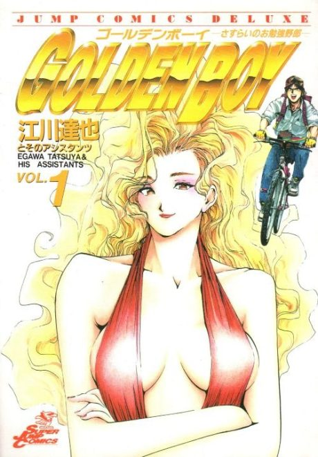

GOLDEN BOY
GOLDEN BOY さすらいのお勉強野郎
After the anime, read the manga from Volume 2.
7.8AniList score
—Animeter, no votes yet
6episodes, season 1
Anime finished. Where does the manga pick up?
Start at Volume2
MangaShed says the OVA adapts up to the end of volume 1; start at volume 2 (around chapter 11).
1110 end
GOLDEN BOYStart reading here